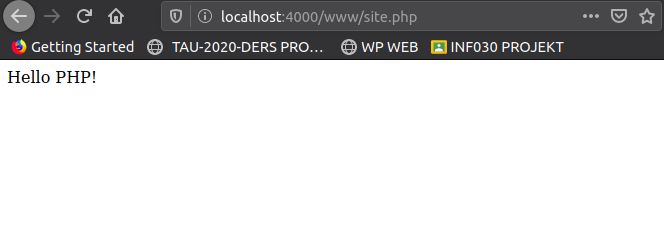

PHP is a server-side programming language.
It sits on the web server and allows interaction with the client.
PHP runs on a web server.
A Web server usually comes with PHP.
On a terminal run the following command:
php -S localhost:4000
An example output from Ubuntu 18.04:
Listening on http://localhost:4000
Document root is /home/$USER
Press Ctrl-C to quit.
Create a folder called "www"
mkdir www
and then open it up with the text editor of your selection
code www
create a file
$FILENAME.php
and then set up the basic HTML skeleton
<!DOCTYPE html>
<html>
<head>
<meta charset="utf8">
</head>
<body>
</body>
</html>
Create a php tag inside of the body tag.
<?php
echo("Hello PHP!");
?>
Now check if it works, try opening the site with the web browser of your selection
firefox localhost:4000/www/$FILENAME.php

The following code also works as expected:
<?php
$ownerName = "Batıkan";
$university = "Turkish - German University";
define('PI', 3.141592);
$address = array('street' => 'Sahinkaya cad.',
'city' => 'Istanbul');
?>
<!DOCTYPE html>
<html lang="en">
<head>
<meta charset="utf8">
<title>batikanor-php</title>
</head>
<body>
<p> Hello, I'm <?php echo $ownerName . ' and I study at the ' . $university ?></p>
</body>
</html>
Now lets note the following methods and come up with an example implementation:
- isset() : Determine if a variable is declared and is different than NULL
- array_key_exists( mixed $key , array $array ) :
Checks if the given key or index exists in the array
<?php
$ownerName = "Batıkan";
$university = "Turkish - German University";
define('PI', 3.141592);
$address = array('street' => 'Sahinkaya cad.',
'city' => 'Istanbul');
?>
<!DOCTYPE html>
<html lang="en">
<head>
<meta charset="utf8">
<title>batikanor-php</title>
</head>
<body>
<p> Hello, I'm <?php echo $ownerName . ' and I study at the ' . $university ?></p>
<form action="site.php" method="get">
<label> Your name: </label>
<input type="text" name="name" placeholder="Your Name"/>
<label> Please input two numbers </label>
<input type="text" name="num1" placeholder="0"/>
<input type="text" name="num1" placeholder="0"/>
<input type="submit" value="Submit"/>
</form>
<?php
if(isset($_GET) && array_key_exists("name", $_GET))
{
$name = $_GET['name'];
if(!empty($name))
{
// When you use double quotes instead of single quotes, you can directly embed the variables.
echo "Your name is $name <br>";
}
}
?>
</body>
</html>
Now, after you open the page and fill all of these boxes with data, your address bar will look similar to this:
http://localhost:4000/www/site.php?name=&num1=4&num2=33
You can clearly see that there are 3 different key-value pairs within the GET array, and you may also use the
count() function to use this information.
if, else if and switch blocks, printf() and strlen() function very similar to the way they do on any other programming language.
For the rest, just check the following codes out and I'm sure you have enough intuition to see what's going on.
<?php
$ownerName = "Batıkan";
$university = "Turkish - German University";
define('PI', 3.141592);
$address = array('street' => 'Sahinkaya cad.',
'city' => 'Istanbul');
?>
<!DOCTYPE html>
<html lang="en">
<head>
<meta charset="utf8">
<title>batikanor-php</title>
</head>
<body>
<p> Hello, I'm <?php echo $ownerName . ' and I study at the ' . $university ?></p>
<form action="site.php" method="get">
<label> Your name: </label>
<input type="text" name="name" placeholder="Your Name"/>
<label> Please input two numbers </label>
<input type="text" name="num1" placeholder="0"/>
<input type="text" name="num2" placeholder="0"/>
<input type="submit" value="Submit"/>
</form>
<?php
if(isset($_GET) && array_key_exists("name", $_GET))
{
$name = $_GET['name'];
if(!empty($name))
{
// When you use double quotes instead of single quotes, you can directly embed the variables.
echo "Your name is $name <br>";
}
}
if(count($_GET >= 3))
{
$num1 = $_GET['num1'];
$num2 = $_GET['num2'];
echo "Sum of the two numbers you entered is " . ($num1 + $num2);
// there are many other operations that can be done within php, but it is best you if you learn them when you need them
}
echo "<br>";
$strToTrim = " - spaces on both sides - ";
printf("%s", $strToTrim);
printf("size after left trim: %d", strlen(ltrim($strToTrim)));
printf("size after full trim: %s", strlen(trim($strToTrim)));
printf("... And this is a substring of it: %s <br>", substr($strToTrim, 11, 3));
$cities = array('Istanbul', 'Ankara', 'Mugla', 'Izmir');
echo 'Capital city of Turkey is: ' . $cities[1] . '<br>' ;
$cities[4] = 'Antalya';
foreach($cities as $ci)
{
printf("One of the cities is : %s <br>", $ci);
}
foreach($address as $k => $v)
{
printf("%s of Turkish - German University is %s <br>", $k, $v);
}
// You can also add arrays to one another, or sort arrays using sort (ascending), rsort (descending), asort(associative arrays(sort by value)), ksort (sort by key), arsort, krsort, <div class=""></div>
//multi dimnesional arrays
$lessons = array(array('name' => 'INF208', 'semester' => 3),
array('name' => 'INF101', 'semester' => 1));
printf("%s <br>", $lessons[0][name]);
foreach($lessons as $lesson)
{
foreach($lesson as $k => $v)
{
printf("%s of this lesson is %s <br>", $k, $v);
}
}
//Or you could do a for loop in a similar way to any other language (for($i = 0; $i < 10; $i++){})
// explode() splits a string by a string, implode joins array elements with a string
$str_space = "T A U";
$arr_from_str = explode(' ', $str_space);
foreach($arr_from_str as $letter_hey)
{
echo 'one of the letters is ' . $letter_hey .'<br>';
}
// now re-unite the string
$str_reunite = implode(' ', $arr_from_str);
printf('imploded string: %s <br>', $str_reunite);
// while and do-while loops also function as expected, no need to test them here, use them when needed and learn only then
//defining functions
//4 and 4 are the default values for the parameters in this case, so if no value is passed they'll be initialized with 3, 4
function multiplyNumbers($num1=3, $num2=4)
{
return $num1 * $num2 ;
}
echo multiplyNumbers(1) . '<br>'; //4
// Currently there is no way to pass arguments in PHP, so the next line is, for now, not practically implementable
// echo multiplyNumbers(,1) . '<br>'; //3
echo multiplyNumbers() . '<br>'; // 12
echo multiplyNumbers(9,8) . '<br>'; // 72
// Please note that attributes are PASSED BY VALUE! (Not by reference)
// Variadic functions... (as many arguments passed into an array as you wish)
function haveFun(...$vals)
{
$sum = 0;
$mult = 1;
foreach($vals as $val)
{
$sum += $val;
$mult *= $val;
}
//print sum
echo 'sum of values in function is... ' . $sum . '<br>';
//return an array containing sum, firstval, mult
return array($sum, $vals[0], $mult);
}
$funArr = haveFun(3,4,5,11); // 23
// list() takes values from an array and assigns them to variables
list($zzSum, $zzFirst, $zzMult) = $funArr;
printf("sum : %s, first : %s, mult : %s <br>", $zzSum, $zzFirst, $zzMult);
function alterNum($numy)
{
return $numy + pi();
}
$listy = [1,2,3,4];
// applies the function for every single value in array
$newListy = array_map('alterNum', $listy);
// print_r() prints human readable version of a variable... REALLY useful for testing.. So we will use this from now on...
// array_reduce() iteratively reduces to array to a single value using callbacks (so if function had 2 arguments and returned their multiplications, the reduced value for this list would become 24)
// array_filter() filters elements of an array using callbacks (i.e. if they return true)
print_r($newListy);
date_default_timezone_set('Turkey/Istanbul');
//check php documentation for character codes for dates
echo 'Date: ' . date('I F d-m-Y g:i:s A') . '<br>';
?>
</body>
</html>
Of course, you don't have to write the whole php code explicitly inside your HTML block, you could write on a seperate file and include it aswell...
include 'myfile.php'
At this point you can say that you KNOW PHP. But to make your knowledge practically useful, you may want to learn about the following topics for the sake of your future applications.
- Exception handling
- Database and database connection
- Object-oriented PHP
- ...